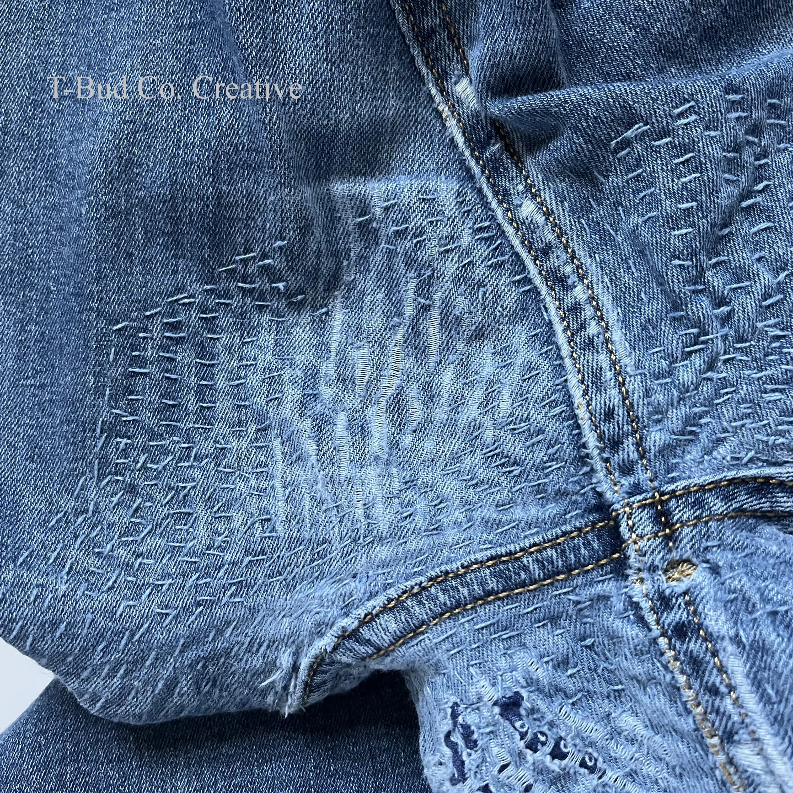

Μοδίστρα
Miranda's — Επιδιορθώσεις ρούχων στα Σεπόλια, Αθήνα
Επιδιορθώσεις και μεταποιήσεις ρούχων στα Σεπόλια, Αθήνα. Φροντίδα για το αγαπημένο σας τζιν, το νυφικό και τα υφάσματα του σπιτιού.
Κρατάμε το αρχικό στυλ με τις απαραίτητες παρεμβάσεις, και τη μέγιστη φροντίδα και προσοχή.
- Αόρατες επιδιορθώσεις σε denim
- Στριφώματα στο χέρι και προσαρμογές σε βραδινά φορέματα.
- Μεταποίηση κουρτινών με επίσκεψη κατ'οίκον για μέτρηση.
Σχετικά με το εργαστήρι
Είμαι η Μιράντα, η μοδίστρα που χρειάζεστε για να κρατήσετε τα αγαπημένα σας ρούχα σε χρήση ακριβώς όπως τα έχετε φανταστεί! (ή και καλύτερα! 😉)
Μερικές Ιδέες...
- Στένεμα μέσης ή φάρδεμα σε τουαλέτες, τοποθέτηση caps, επιδιόρθωση ντεκολτέ
- Ανανέωση των τζιν με ραφές στο ίδιο χρώμα, προεκτάσεις, μπάλωμα καβάλου, στρίφωμα με ορίτζιναλ, κρόσια / διασκοσμητικά σκισίματα
- Τοποθέτηση μανικιών, Ανέβασμα ώμων, Στένεμα, Κόντεμα, Προσθήκη / Αλλαγή φόδρας
Πριν & Μετά
Μικρά θαύματα, ραμμένα με αγάπη και φροντίδα ⠂˖❥࿐

Μεταποιήσεις ρούχων στην ΑθήναClothing alterations in Athens
Εφαρμογές στα μέτρα σας...
Μετατροπές σε μέση, στήθος και μήκος που ακολουθούν το στύλ του ρούχου, ή του δίνουν νέο αέρα!
Επιδιόρθωση & ανανέωση ρούχων!
Τι καλύτερο από το να βλέπετε το ρούχο σας να ξαναζωντανεύει!
Υφάσματα σπιτιού
Κουρτίνες ραμμένες στο σωστό μήκος, μαξιλαροθήκες και μαξιλάρες καναπέ, λευκά είδη...
Βρείτε την υπηρεσία που χρειάζεστεFind the service you need
Επικοινωνία
Τηλέφωνο:
Email:
Διεύθυνση: Αυλώνος 88, Σεπόλια, Αθήνα, Ελλάδα
Οδηγίες για Αυλώνος 88, ΑθήναDirections to 88 Avlonos, Athens
Επιστροφή στην αρχή